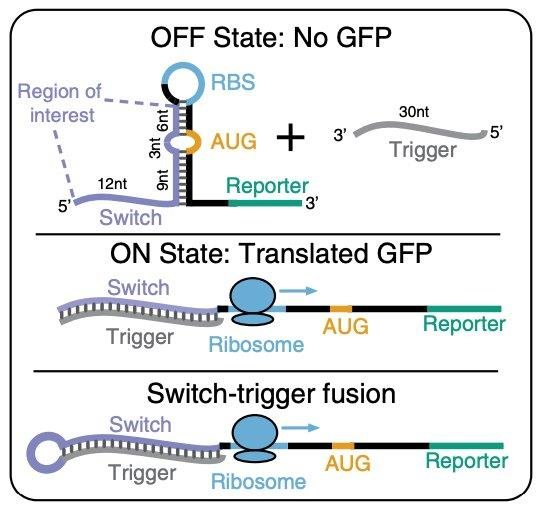
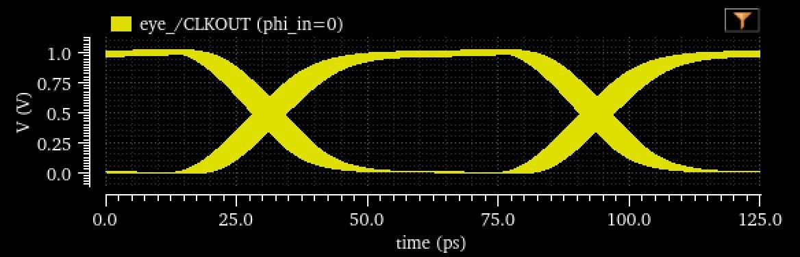

B.S. Electrical Engineering ’27 · Caltech · MICS Lab
Low-power on-chip spike sorting
Developing a spike-sorting pipeline efficient enough to run on every channel of a high-density implant,
so neural data can be sorted at the electrode. Exploring spiking-neuron feature extractors and unsupervised on-chip clustering.
Wearable medical sensor: antenna design and bring-up firmware
MICS Lab, Caltech|2025–2026
Designed antenna geometries with parametric full-wave ANSYS HFSS simulations across tissue loading, body proximity,
and substrate variation; the geometry went into the fabricated antenna. Wrote the bench-test sequence and C/C++ firmware
(Arduino, Nordic) for the sensor ASIC, and extended it to Bluetooth.

Modeling virus–host interactions with synthetic cells
Murray Lab (Biocircuits), Caltech|Advisor: Richard Murray|2024–2025
Built a minimal host membrane by embedding lipopolysaccharides into POPC liposomes to isolate
PhiX174–E. coli C interactions, and designed RNA toehold switches to report on viral transcription.

Neural spike detector ASIC
Independently designed and taped out a real-time digital spike detector in Verilog: pipelined IIR bandpass,
nonlinear energy operator, and adaptive EWMA threshold, all SPI-configurable. Full open-source flow completed.
Silicon expected November 2026.
read more →

8 GHz delay-locked loop in 45 nm CMOS
EE 124|Cadence Virtuoso, Spectre, ADE/Maestro|2026
A complete DLL — phase-frequency detector, charge pump, loop filter, voltage-controlled delay line — with
16.1 fs RMS jitter clean, 3.26 ps RMS under injected supply noise, and under 3.8 mW total.
Awarded Best DLL Project for class-best power, static phase offset, and jitter.
read more →
I run for Caltech’s NCAA Division III cross country and track & field teams, play violin in the Caltech Symphony
Orchestra, and serve as Secretary of the IEEE student chapter. I’ve been a musician for fifteen years and still read
music theory for fun. Running, music, and previously competitive swimming have shaped me at least as much as anything
academic, and I’ve loved keeping all of them up.